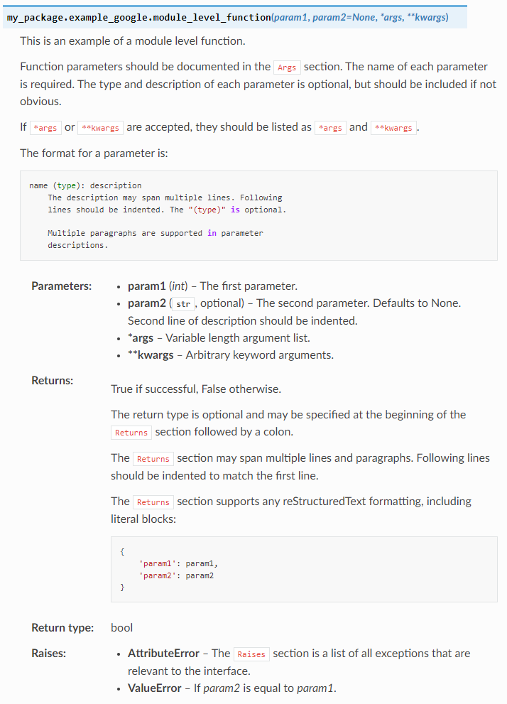
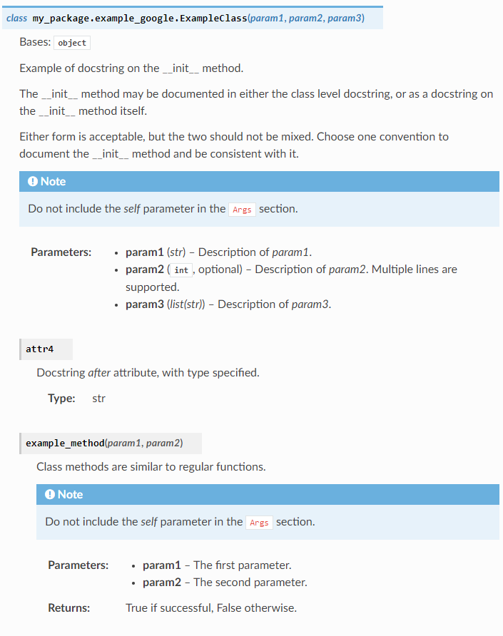
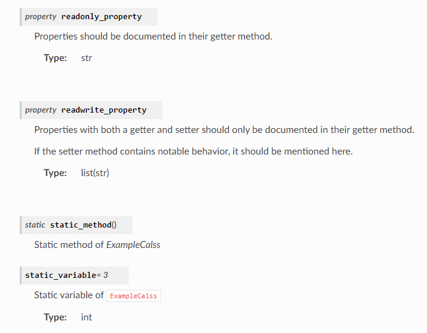

Docstring 문법#
이 문서는 코드 안에 작성하는 docstring 문법을 설명합니다.
Docstring은 보통 """ """ 로 감싸진 문자열로 되어있습니다. 다음은 가장 간단한
함수의 docstring 예시입니다.
def add_two_numbers(a, b):
"""두 숫자 a와 b를 더한 값을 리턴합니다.
"""
return a + b
이처럼 docstring은 코드 안에 작성되고 기능을 설명하지만 코드에는 아무런 영향이 없는 문자열을 나타냅니다.
Docstring은 모듈 단위에서도 사용될 수 있습니다. 다음은 모듈 단위의 docstring 예시 입니다.
In my_pakage/my_module.py :
"""모듈 단위의 docstring 입니다. 이 모듈은 의미 없는 기능들을 포함합니다.
감사합니다.
"""
def add_two_numbers(a, b):
"""두 숫자 a와 b를 더한 값을 리턴합니다.
"""
return a + b
위의 코드를 Sphinx의 autodoc을 사용하여 변환하면 다음과 같은 결과가 생성됩니다.
위의 문서는 없는 것 보다는 낫지만 크게 도움은 안 되는 문서입니다. 더욱 효과적인 문서 작성을 위한 docstring 문법을 아래에 설명하겠습니다.
Important
이제부터 설명드리는 문법은 구글 스타일의 docstring입니다. docstring의 종류는 크게 기본, 넘파이, 구글 스타일이 있으며 구글 스타일을 선택한 이유는 이 중 가장 깔끔하고 사용이 편하다고 판단해서입니다. 넘파이 스타일을 사용해도 좋으며 문법도 매우 유사하여 둘 중 하나를 사용할 수 있다면 다른 스타일도 쉽게 사용할 수 있습니다. 하지만 두 스타일을 한 코드에서 혼용해서는 안 됩니다.
다음 3가지 코드는 완벽하게 같은 문서를 생성합니다.
Default:
def func(arg1, arg2):
"""Summary line.
Extended description of function.
:param arg1: Description of arg1
:type arg1: int
:param arg2: Description of arg2
:type arg2: str
:return: Description of return value
:rtype: bool
"""
return True
Google:
def func(arg1, arg2):
"""Summary line.
Extended description of function.
Args:
arg1 (int): Description of arg1
arg2 (str): Description of arg2
Returns:
bool: Description of return value
"""
return True
Numpy:
def func(arg1, arg2):
"""Summary line.
Extended description of function.
Parameters
----------
arg1 : int
Description of arg1
arg2 : str
Description of arg2
Returns
-------
bool
Description of return value
"""
return True
또한 구글 스타일의 완전한 예시는 예시 파일 과 napoleon 공식문서 에서 확인할 수 있습니다.
구글 스타일의 docstring을 사용하기 위해서는 다음과 같이 napoleon 확장을
사용해야 합니다.
In conf.py :
1extensions = [
2 # Autodoc 기능 활성화.
3 'sphinx.ext.autodoc',
4 # Numpy, Google 스타일의 docstring을 사용하기 위하여.
5 'sphinx.ext.napoleon',
6]
Docstring은 reStructuredText를 지원 하며 다음과 같은 특수 Section들을 지원합니다.
지원 Section 리스트
|
|
|
예시를 새로 만들지는 않고 제공된 예시를 그대로 사용하겠습니다.
1. 모듈 단위의 docstring#
1"""Example Google style docstrings.
2
3This module demonstrates documentation as specified by the `Google Python
4Style Guide`_. Docstrings may extend over multiple lines. Sections are created
5with a section header and a colon followed by a block of indented text.
6
7Example:
8 Examples can be given using either the ``Example`` or ``Examples``
9 sections. Sections support any reStructuredText formatting, including
10 literal blocks::
11
12 $ python example_google.py
13
14Section breaks are created by resuming unindented text. Section breaks
15are also implicitly created anytime a new section starts.
16
17Attributes:
18 module_level_variable1 (int): Module level variables may be documented in
19 either the ``Attributes`` section of the module docstring, or in an
20 inline docstring immediately following the variable.
21
22 Either form is acceptable, but the two should not be mixed. Choose
23 one convention to document module level variables and be consistent
24 with it.
25
26Todo:
27 * For module TODOs
28 * You have to also use ``sphinx.ext.todo`` extension
29
30.. _Google Python Style Guide:
31https://google.github.io/styleguide/pyguide.html
32
33"""
34
35module_level_variable1 = 12345
36
37module_level_variable2 = 98765
38"""int: Module level variable documented inline.
39
40The docstring may span multiple lines. The type may optionally be specified
41on the first line, separated by a colon.
42"""
앞에서 설명했던 것 처럼 모듈 파일의 맨 위에 작성됩니다. reStructuredText를 사용하여 작성하거나 위에 나와 있는 section 헤더 (하이라이트 처리된 곳)를 사용하여 작성할 수 있습니다.
모듈 단위의 변수는 Attributes (17 줄) 사용해서 작성할 수 있습니다.
혹은 (37-42 줄) 처럼 모듈 단위의 변수가 정의된 곳 바로 밑에 작성할 수도 있습니다.
개인적으로는 유지 보수가 간단한 2번째 방법이 좋은 것 같습니다.
Output:
페이지 맨 아래:
Note
Attributes 와 Inline으로 작성된 문서의 차이가 있습니다.
|
Inline |
|
|---|---|---|
위치 |
작성한 곳 |
페이지 맨 아래 |
초기값 |
작성한 값 |
코드상 입력된 값 |
여러모로 인라인이 더 좋은 것 같습니다.
2. 모듈 단위 함수#
1def module_level_function(param1, param2=None, *args, **kwargs):
2 """This is an example of a module level function.
3
4 Function parameters should be documented in the ``Args`` section. The name
5 of each parameter is required. The type and description of each parameter
6 is optional, but should be included if not obvious.
7
8 If ``*args`` or ``**kwargs`` are accepted,
9 they should be listed as ``*args`` and ``**kwargs``.
10
11 The format for a parameter is::
12
13 name (type): description
14 The description may span multiple lines. Following
15 lines should be indented. The "(type)" is optional.
16
17 Multiple paragraphs are supported in parameter
18 descriptions.
19
20 Args:
21 param1 (int): The first parameter.
22 param2 (:obj:`str`, optional): The second parameter. Defaults to None.
23 Second line of description should be indented.
24 *args: Variable length argument list.
25 **kwargs: Arbitrary keyword arguments.
26
27 Returns:
28 bool: True if successful, False otherwise.
29
30 The return type is optional and may be specified at the beginning of
31 the ``Returns`` section followed by a colon.
32
33 The ``Returns`` section may span multiple lines and paragraphs.
34 Following lines should be indented to match the first line.
35
36 The ``Returns`` section supports any reStructuredText formatting,
37 including literal blocks::
38
39 {
40 'param1': param1,
41 'param2': param2
42 }
43
44 Raises:
45 AttributeError: The ``Raises`` section is a list of all exceptions
46 that are relevant to the interface.
47 ValueError: If `param2` is equal to `param1`.
48
49 """
50 if param1 == param2:
51 raise ValueError('param1 may not be equal to param2')
52 return True
Output:
3. Generator#
def example_generator(n):
"""Generators have a ``Yields`` section instead of a ``Returns`` section.
Args:
n (int): The upper limit of the range to generate, from 0 to `n` - 1.
Yields:
int: The next number in the range of 0 to `n` - 1.
Examples:
Examples should be written in doctest format, and should illustrate how
to use the function.
>>> print([i for i in example_generator(4)])
[0, 1, 2, 3]
"""
for i in range(n):
yield i
Output:
4. Class#
class ExampleClass:
static_variable = 3
"""int: Static variable of ``ExampleCalss``"""
def __init__(self, param1, param2, param3):
"""Example of docstring on the __init__ method.
The __init__ method may be documented in either the class level
docstring, or as a docstring on the __init__ method itself.
Either form is acceptable, but the two should not be mixed. Choose one
convention to document the __init__ method and be consistent with it.
Note:
Do not include the `self` parameter in the ``Args`` section.
Args:
param1 (str): Description of `param1`.
param2 (:obj:`int`, optional): Description of `param2`.
Multiple lines are supported.
param3 (list(str)): Description of `param3`.
"""
self.attr1 = param1
self.attr2 = param2
self.attr3 = param3
self.attr4 = None
"""str: Docstring *after* attribute, with type specified."""
@property
def readonly_property(self):
"""str: Properties should be documented in their getter method."""
return 'readonly_property'
@property
def readwrite_property(self):
"""list(str): Properties with both a getter and setter
should only be documented in their getter method.
If the setter method contains notable behavior, it should be
mentioned here.
"""
return ['readwrite_property']
@readwrite_property.setter
def readwrite_property(self, value):
value
def example_method(self, param1, param2):
"""Class methods are similar to regular functions.
Note:
Do not include the `self` parameter in the ``Args`` section.
Args:
param1: The first parameter.
param2: The second parameter.
Returns:
True if successful, False otherwise.
"""
return True
def __special__(self):
"""By default special members with docstrings are not included.
Special members are any methods or attributes that start with and
end with a double underscore. Any special member with a docstring
will be included in the output, if
``napoleon_include_special_with_doc`` is set to True.
This behavior can be enabled by changing the following setting in
Sphinx's conf.py::
napoleon_include_special_with_doc = True
"""
pass
def __special_without_docstring__(self):
pass
def _private(self):
"""By default private members are not included.
Private members are any methods or attributes that start with an
underscore and are *not* special. By default they are not included
in the output.
This behavior can be changed such that private members *are* included
by changing the following setting in Sphinx's conf.py::
napoleon_include_private_with_doc = True
"""
pass
def _private_without_docstring(self):
pass
@staticmethod
def static_method():
"""Static method of `ExampleCalss`"""
pass
Output:
 